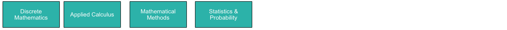
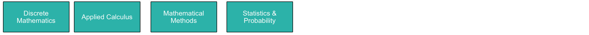

Mathematics
 The Mathematics Strand underpins most of the other strands: its purpose is to provide a rigorous foundation for manyof the more applied concepts met in the other Strands. As such it is offered early in the course. DiscreteMathematicsrepresents abreath first rather than depth first treatment of concepts such as logic (cf. Programming), complexity and recurrence (cf. Algorithms), sets (cf. Data Structures), enumeration (cf. Statistics), relations (cf. Databases) andgraphs (cf. Algorithms and Networking). Its purpose is to ensure that all students have a basic mathematical literacyin such topics. In such a one semester course, the treatment will necessarily be at an introductory level, but theconcepts will be covered in greater depth later in the course, mainly in modules on other Strands
The Mathematics Strand underpins most of the other strands: its purpose is to provide a rigorous foundation for manyof the more applied concepts met in the other Strands. As such it is offered early in the course. DiscreteMathematicsrepresents abreath first rather than depth first treatment of concepts such as logic (cf. Programming), complexity and recurrence (cf. Algorithms), sets (cf. Data Structures), enumeration (cf. Statistics), relations (cf. Databases) andgraphs (cf. Algorithms and Networking). Its purpose is to ensure that all students have a basic mathematical literacyin such topics. In such a one semester course, the treatment will necessarily be at an introductory level, but theconcepts will be covered in greater depth later in the course, mainly in modules on other Strands
Mathematics Learning Path
 Applied Calculus ensures that students understand features of the real world such as rates of change (which arecritical to many sensing systems) and can manipulate relationships between quantities that vary on a continuous scale.It also covers much of the engineering mathematics needed to understand the devices themselves, needed for the Devicesand Systems Strand, and shows how numerical methods reconcile the finite, discrete world of digital computers andnetworks with the continuous world in which the IoT devices and networks are deployed. Mathematical Methods (inSemester 3) builds on the Applied Calculus module in Semester 2, and shows how the rate of change concept is extendedto multivariate functions and its subsequent applications. However, the major focus of this module is on the conceptsand methods of linear algebra, and the various applications in other modules during the programme (e.g., state-spacemodeling, computer vision and machine learning).
Applied Calculus ensures that students understand features of the real world such as rates of change (which arecritical to many sensing systems) and can manipulate relationships between quantities that vary on a continuous scale.It also covers much of the engineering mathematics needed to understand the devices themselves, needed for the Devicesand Systems Strand, and shows how numerical methods reconcile the finite, discrete world of digital computers andnetworks with the continuous world in which the IoT devices and networks are deployed. Mathematical Methods (inSemester 3) builds on the Applied Calculus module in Semester 2, and shows how the rate of change concept is extendedto multivariate functions and its subsequent applications. However, the major focus of this module is on the conceptsand methods of linear algebra, and the various applications in other modules during the programme (e.g., state-spacemodeling, computer vision and machine learning).
 Department of Computing & Mathematics
Department of Computing & Mathematics
 
